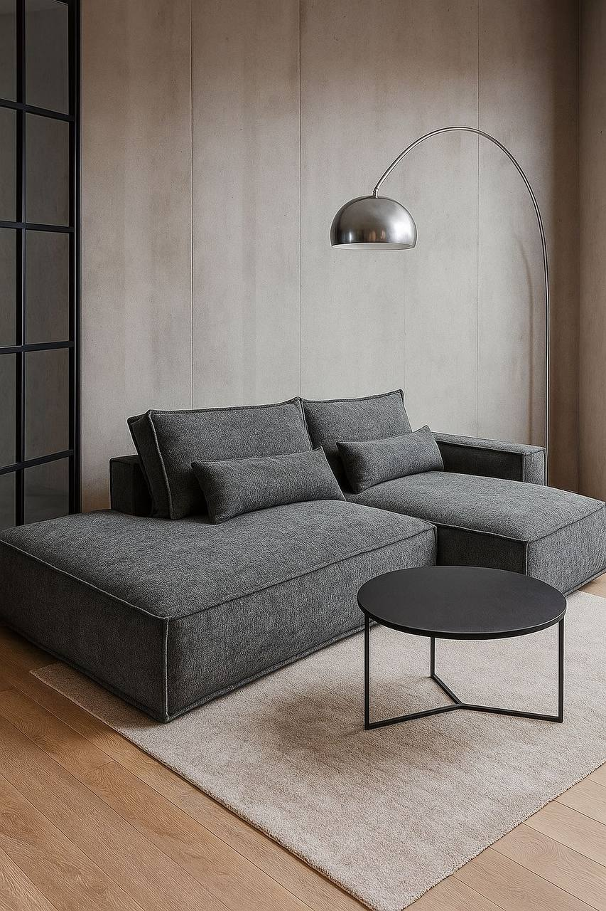
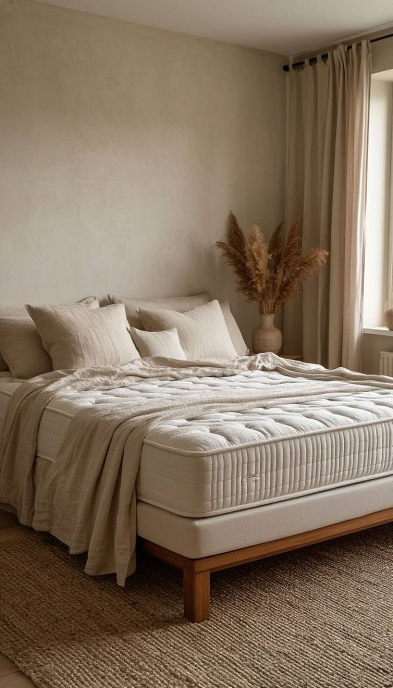
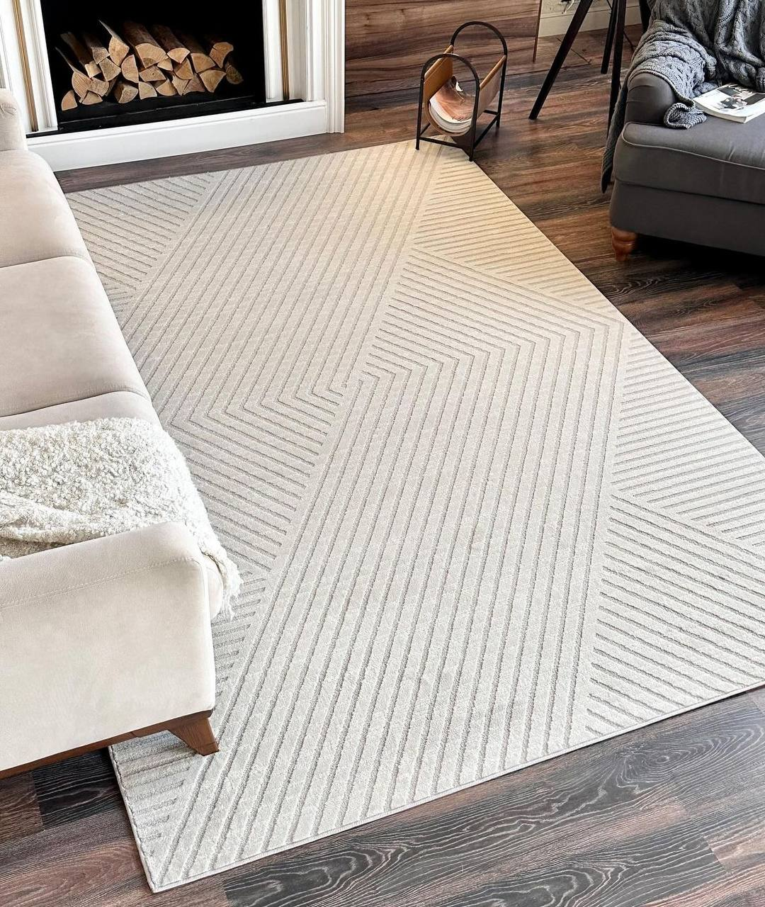
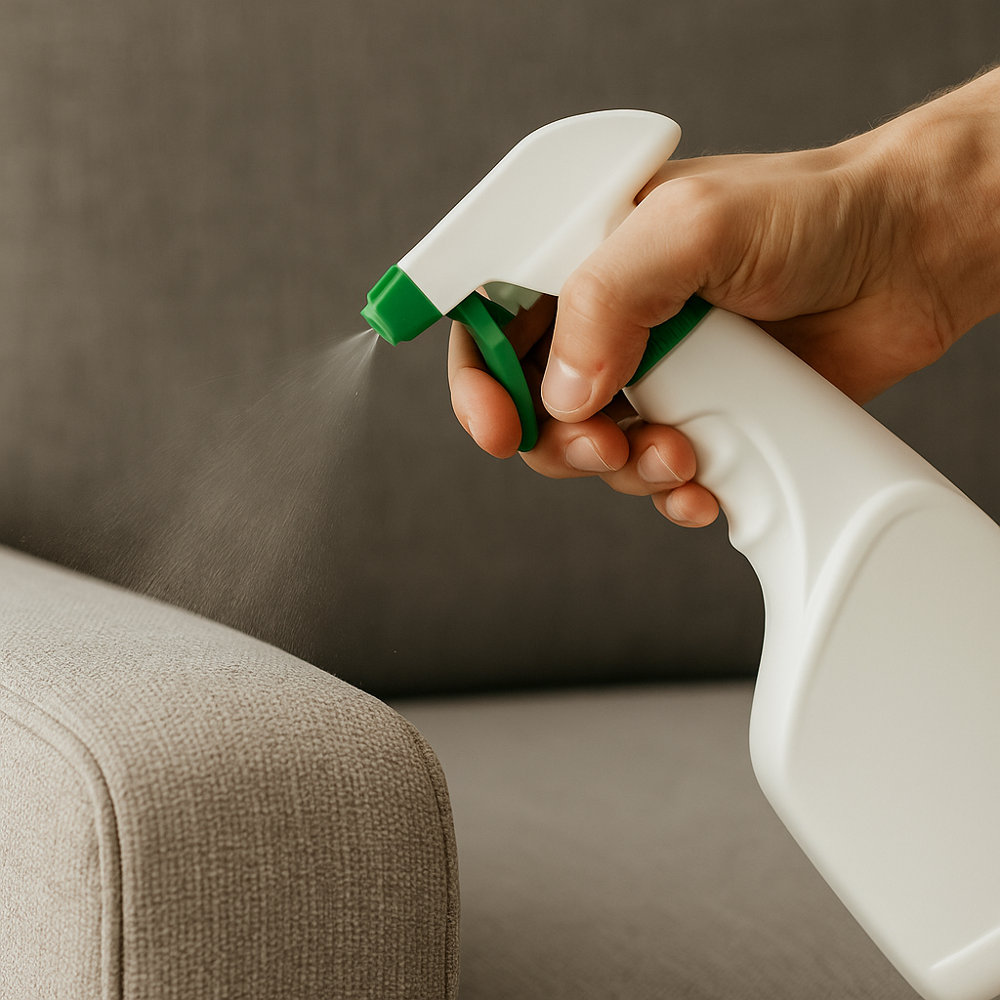

Наши услуги

Химчистка диванов
Глубокая чистка, удаление запахов и аллергенов. Подходит для всех типов тканей.

Химчистка матрасов
Удаляем пыль, клещей, запахи и следы пота. Рекомендуем 1–2 раза в год.

Ковры и ковролин
Чистка и промывка ворса. Восстановление свежести и цвета.

Стулья и кресла
Чистка стульев, кресел и мягкой офисной мебели.

Защита & пропитка
Наносим защиту от пятен и влаги, чтобы мебель оставалась чистой дольше.